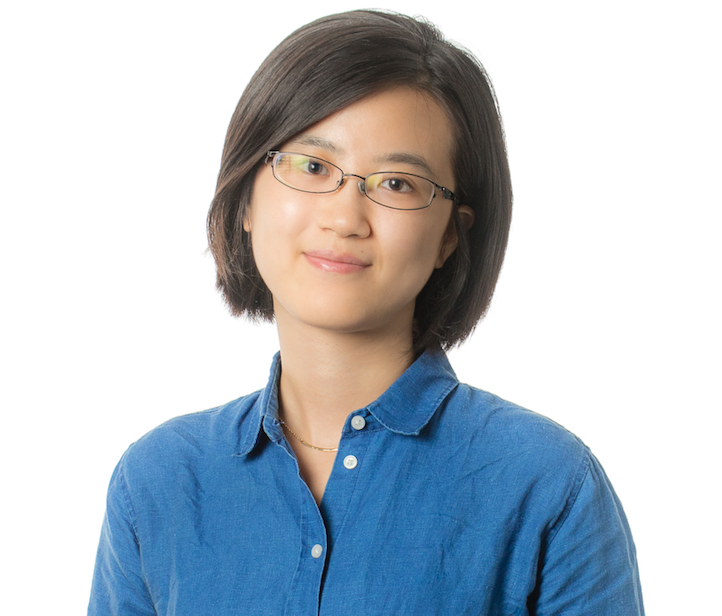

CSER 2024 Fall will be held at York University, Toronto on November 11.
CSER meetings seek to motivate engaging discussions among faculty, graduate students, and industry participants about software engineering research in a broad sense, as well as the intersection between software engineering, other areas of computer science, and other disciplines.
| Important Dates | Deadlines |
|---|---|
| New faculty proposal submission | October 20th, 2024, 11.59pm (EDT) |
| Student proposal submission | October 25th, 2024, 11.59pm (EDT) |
| Acceptance notification | October 30th, 2024 |
| Early registration | - |
Please check back later for updates.
Abstract: As machine learning (ML) models become deeply embedded in life-critical applications such as autonomous driving, healthcare, and cybersecurity, success can no longer be defined by accuracy metrics alone. The real-world deployment of these ML systems presents complex engineering challenges, where robustness and fairness are critical to the safe deployment of these life-critical systems.
Outline: In this keynote, she will illustrate these challenges and present their solutions to ensure the engineering of reliable ML systems. First, she will introduce the robustness challenges of autonomous driving systems (ADS), and discuss their recent works on evaluating and improving the robustness of ADS. Next, she will discuss their recent work of evaluating the robustness of AI4SE applications, including automated program repair where ML models including LLMs are increasingly used to automatically fix bugs. Last, the keynote will showcase the challenges of achieving fair ML systems. She will discuss approaches for detecting and mitigating biases in large language models for SE, which emphasize the importance of building ML software systems that not only perform well but also follow principles of fairness, transparency and accountability.
Bio: Dr. Jinqiu Yang is an Associate Professor at the Gina Cody School of Engineering and Computer Science, Concordia University, in Montreal, Canada. Her research focuses on the intersection of Software Engineering and Artificial Intelligence, particularly in SE4AI and AI4SE. She leads the O-RISA lab, working on safe and robust Large Language Model (LLM) code generation and improving the reliability of complex AI systems, such as Autonomous Vehicles. Dr. Yang has collaborated extensively with industry leaders like Google, IBM, and Ericsson and has secured over $2 million in external research funding. She is recognized for her leadership in the academic community, serving on program committees for flagship conferences such as ICSE and ASE, and as an associate editor for top journals like EMSE. She received the ACM Distinguished Paper Award at MSR 2018 and continues to push the boundaries of AI and software engineering through her work.
To be annonunced...
Dear CSER Community,
The new version of CSER is just around the corner! At this stage, we are soliciting proposals for the “new faculty talk series,” where our newly hired faculty members will introduce themselves, share their research, and engage with the community. These talks will be 20 minutes long, followed by a brief Q&A session. The talks should be in-person.
The New Faculty Talks will be co-located with CASCON and held on November 11. This is an excellent opportunity to present your work to a broader audience and foster collaboration. For more details on co-located events and to register for CASCON, please visit CASCON Co-located Events.
If you are a newly hired faculty member, we invite you to submit your details for participation. Please include:
Please complete this form Submit Your Faculty Talk Proposal by October 20th to submit your statement of interest for a faculty talk. After the submission period, we will follow up with the schedule and further details.
If you know of a recent faculty hire in your SE groups, please forward this email to them or email us, and we will reach out to them.
We look forward to your participation!
Best regards,
Mehrdad Sabetzadeh (UOttawa)
Maleknaz Nayebi (YorkU) - mnayebi@yorku.ca
Dear CSER Community,
The new version of CSER is just around the corner! As usual, we invite students to participate by giving a 10-15 minute talk or presenting a poster, depending on the number of attendees.
This is a fantastic opportunity to showcase your research, gain experience presenting, and connect with the CSER and CASCON communities. The event will be co-located with CASCON on November 11, offering a unique chance to engage with a broader audience and foster collaboration. For more details on co-located events and to register for CASCON, please visit CASCON Co-located Events.
If you are interested in participating, please submit your details, including:
To submit your statement of interest for a student talk or poster, please fill out this form Submit Your Student Presentation Proposal by October 25th.
We will follow up with the final schedule and presentation details after the submission period.
Faculty members, please forward this email to your students and encourage them to attend or participate in the event!
We look forward to your participation!
Best regards,
Mehrdad Sabetzadeh (UOttawa)
Maleknaz Nayebi (YorkU) - mnayebi@yorku.ca
This year, CSER is co-located with CASCON and held on November 11.
For more information, please visit CASCON.
This year, CSER is co-located with CASCON and held on November 11. This is an excellent opportunity to present your work to a broader audience and foster collaboration. For more details on co-located events and to register for CASCON, please visit https://cscan-infocan.ca/co-located-tickets/ "